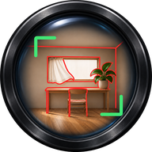

BEFORE

AFTER


アフター先に左側でビフォーを撮るか、
写真から選んでください
写真から選んでください
一致 --%
ピタッ！
新しい版があります
長押しで大きく見られます。
ホーム画面に追加して使うと、保存した写真が消えにくくなります。大事なものは写真アプリにも保存してください。

使い勝手のフィードバックをお願いします
一言だけでも大丈夫です。使いにくいところ、ほしい機能などを教えてください。
送られるのは、書いた内容とお名前（書いたときだけ）、アプリの版・端末の種類だけです。写真は送られません。
マナーモード（消音）のときは、音が鳴らないことがあります。